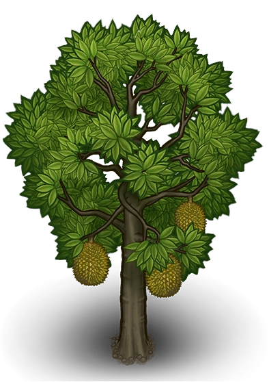

🆠DURIAN ğŸ†
Raja Buah-buahan Tropika Malaysia
Durian

💡 Fakta-fakta tentang Durian! 💡
Durian digelar “raja buah†kerana saiznya yang besar, baunya yang kuat, dan rasanya yang unik.
Durian berasal dari Asia Tenggara dan banyak ditemui di Malaysia, Indonesia, Thailand, serta Filipina.
Di Malaysia, musim durian biasanya antara bulan Jun hingga Ogos, dan kadangkala musim kedua pada hujung tahun.
Terdapat banyak jenis durian terkenal seperti Musang King (D197), D24, Udang Merah, dan Black Thorn.
Durian kaya dengan karbohidrat, serat, vitamin C, kalium, dan juga mengandungi lemak sihat.
🌱 Cara menanam pokok durian 🌱

Langkah-Langkah:
- Pilih biji atau anak pokok durian yang sihat.
- Sediakan tanah yang subur dan gembur.
- Gali lubang sedalam 30–50 cm.
- Masukkan anak pokok dan timbus dengan tanah.
- Siram air secukupnya dan pastikan mendapat cahaya matahari.
- Letakkan baja organik dari semasa ke semasa.